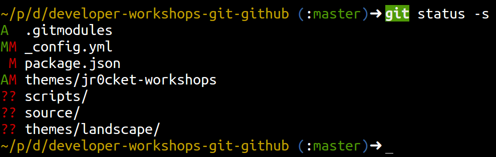

Just like the Unix shell, you can add aliases to Git as short-cuts to the command that you use frequently, so you can use git even more effectively.
Defining aliases for those tricky to remember commands you dont use very often, but help you get yourself out of trouble with Git.
Git Log
The default git log command is very verbose in its output, especially when you have many commits. Using a few options to the git log command you can get a much more useful output.
oneline
As you can probably guess, the --oneline option puts all the information of a commit on one line. This commit information is the abreviated commit number and the commit message.
graph option
This displays the log as a graph showing where branching and merging has taken place
decorate option
This shows which branches are on which commit versions, including remote repositories that have been added to the local repository. So you can easily see the most recent commit for repository and branch. This information help you understand if you need to push or merge commits between repositories and branches.
Add the Git log alias
Putting these three options together in the alias file:
[alias]
lg = log --oneline --graph --decorate
hardcore customisation
You can also define exactly what information you want displayed each line of the Git log (and in what color) using the --pretty option
[alias]
lp = log
--graph
--pretty=format:
'hC(bold yellow)Creset C(blue)(C(magenta)Creset'
--all
The above alias should all be on one line in the .gitconfig file
Other useful aliases
When you become a regular git user you will notice you type git status very often. You may also notice it is also quite verbose in its output. Once you know the different stages of your workflow of changes (untracked, modified, staged) you simply get a summary view of the status by using the -s option
git status -s

I also like to add branch information to my status output….
[alias]
sitrep = status -sb
sr = status -sb
word = diff --word-diff
unstage = reset HEAD
Read the official documentation on git customisation for more options.